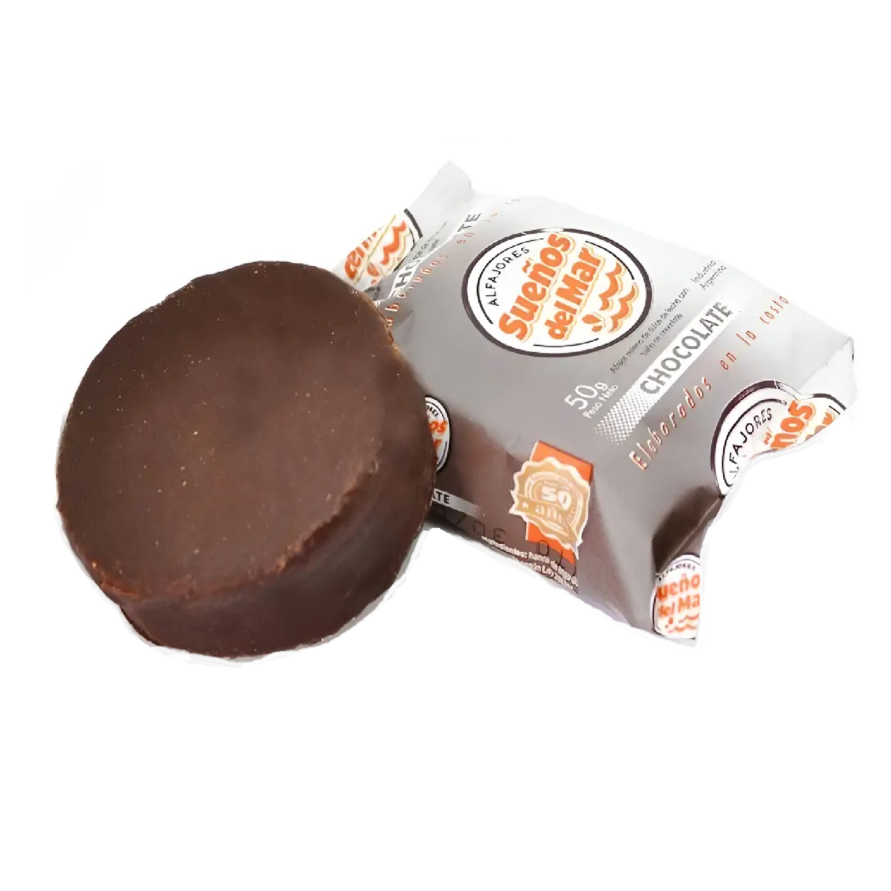
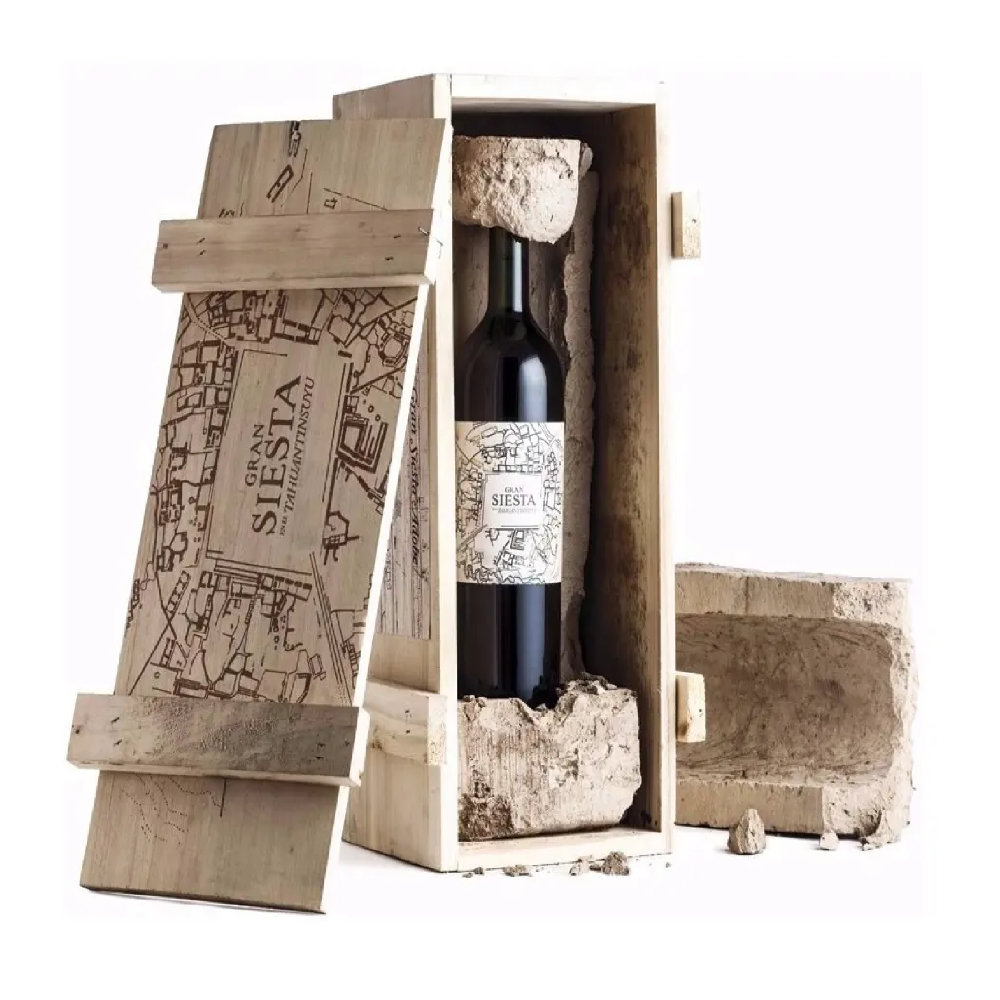
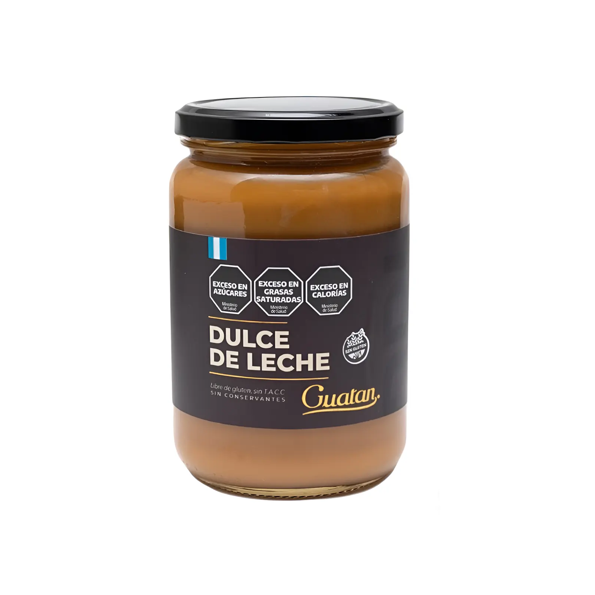

Productos para regalar
Ingresá al detalle de cada producto para concer sus características y saber por qué es el mejor regalo.

Alfajores Artesanales
Descubrí el auténtico sabor del dulce regional con estos alfajores. Con su relleno generoso y masa suave vas a poder disfrutar de un producto único. Estos alfajores combinan la receta tradicional con la calidad y frescura que caracteriza nuestros productos.

Vino de Altura
Descubrí la auténtica esencia de los viñedos andinos con este vino. Con su perfil aromático y cuerpo intenso vas a poder apreciar los mejores sabores. Este vino combina la fuerza del terruño con la calidad y elegancia que caracteriza nuestros productos.

Dulce de Leche Artesanal
Descubrí la auténtica receta de campo con este dulce de leche. Con su textura cremosa y dulzor equilibrado vas a poder acompañar tus mejores postres. Este dulce combina la elaboración paciente con la calidad y nobleza que caracteriza nuestros productos.